Contents
Exercice 1
clear;
Q1
Comment se nomme ce signal?
C'est un sinus cardinal.
figure
t = linspace(-4,4,1000);
s = sin(pi*t)./(pi*t);
plot(t,s);
title('Exercice 1 - Question 1 : Sinus cardinal');
xlabel('Temps');
ylabel('Amplitude');
legend('signal');
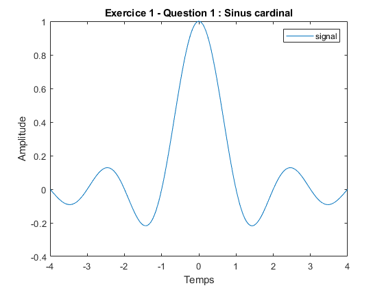 Q2
figure;
t = linspace(-2,2,500);
s1 = sin(t);
s2 = sin(3*t)./3;
s3 = sin(5*t)./5;
plot(t,s1); hold on;
plot(t, s2); hold on;
plot(t, s3);
title('Exercice 1 - Question 2');
xlabel('Temps');
ylabel('Amplitude');
legend('sin(t)', 'sin(3t)/3', 'sin(5t)/5');
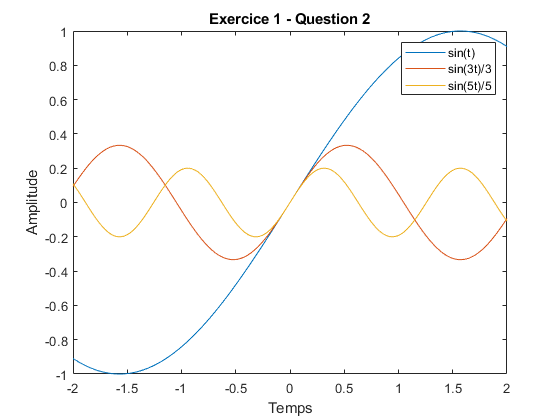 Q3
figure;
t = linspace(-2,2,500);
s1 = sin(t);
s2 = sin(3*t)./3;
s3 = sin(5*t)./5;
plot(t,s1,'--'); hold on;
plot(t, s2, '--'); hold on;
plot(t, s3, '--'); hold on;
plot(t, s1 + s2 + s3, 'linewidth', 2);
title('Exercice 1 - Question 3');
xlabel('Temps');
ylabel('Amplitude');
legend('sin(t)', 'sin(3t)/3', 'sin(5t)/5', 'somme');
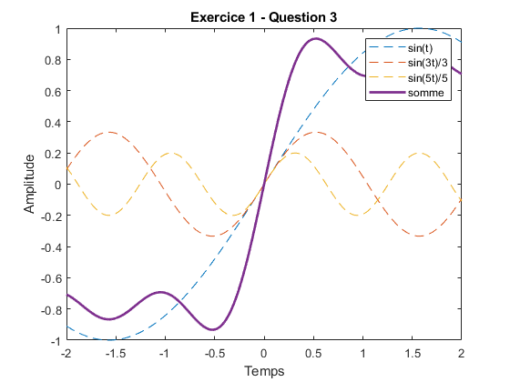 Q4
figure;
t = linspace(-2,2,500);
sinsum = 0;
for i = 0:50
sinsum = sinsum + sin(((2*i)+1)*t)./((2*i)+1);
end
s50 = (1./2) + (2./pi)* sinsum;
plot(t, s50);
title('Exercice 1 - Question 4');
xlabel('Temps');
ylabel('Amplitude');
legend('0.5 + (2/pi)*sum(sin(((2*i)+1)*t)/((2*i)+1))');
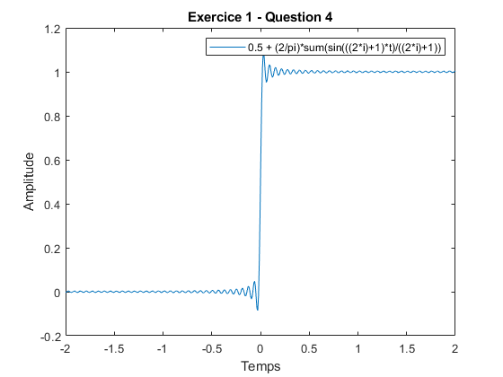 Exercice 2
clear;
Q1
Déterminer théoriquement les fréquences présentes dans ce signal.
165/2 = 82.5 Hz, 6/2 = 3 Hz, 80/2 = 40 Hz
Q2
figure('Position', [100,100,1400,800]); titles = {'Fe = 20 Hz','Fe = 75 Hz','Fe = 100 Hz','Fe = 160 Hz','Fe = 180 Hz','Fe = 330 Hz'}; thz = {linspace(0,1,20),linspace(0,1,75),linspace(0,1,100),linspace(0,1,160),linspace(0,1,180),linspace(0,1,330)}; for n = 1:length(thz) subplot(2,3,n); t = thz{n}; Y = 2*sin(165*pi*t)+13*cos(6*pi*t)-3*cos(80*pi*t); plot(t, Y); title(titles{n}); xlabel('Temps'); ylabel('Amplitude'); legend('signal'); end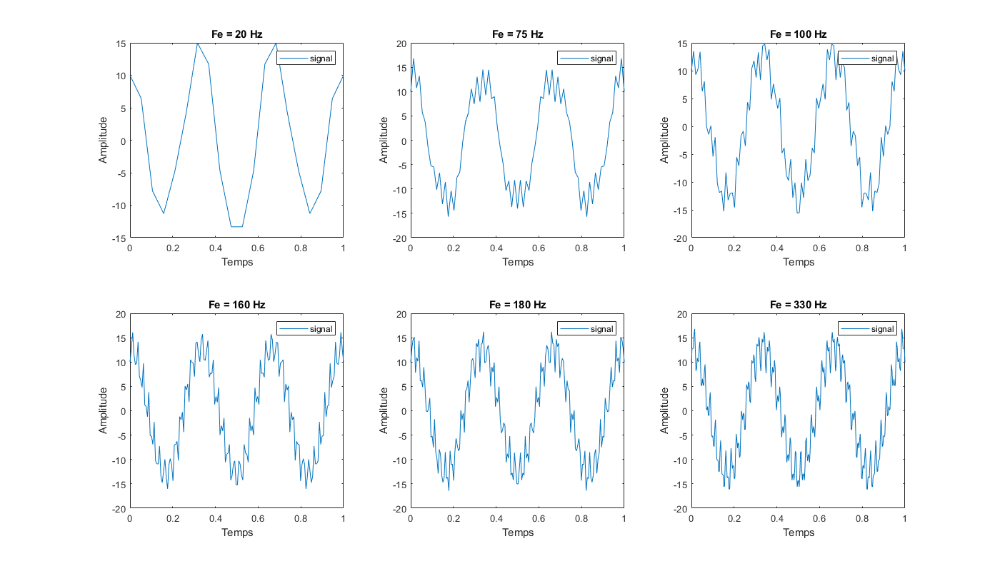
Q3
Que remarquez-vous par rapport à la forme du signal en lien avec la fréquence d’échantillonnage?
plus la fréquence d'échantillonage est élevée, plus on peut voir les fréquences plus élevées dans le signal numérique résultant
Q4
Lesquelles, parmi ces fréquences d’échantillonnage, satisfont le théorème de Nyquist-Shannon?
Les fréquences d'échantillonage de 100Hz, 160Hz, 180Hz et 330Hz satisfonts le critère de Nyquist-Shannon.
En pratique, quel compromis doit-on faire lors du choix d’une fréquence d’échantillonnage?
Le compromis à faire est entre l'espace mémoire et la qualité du signal: une fréquence d'échantillonage plus élevée signifie, en général, une meilleure qualité de signal numérique, mais celui-ci prendra plus d'espace mémoire que le même signal échantilloné à une fréquence d'échantillonage plus basse.
Exercice 3
clear;
Q1
figure
fe = 250;
t = linspace(0,1,fe);
Y1 = 7*sin(2*pi*10*t);
n1 = length(Y1);
Y2 = 4*sin(2*pi*25*t+(pi/3));
n2 = length(Y2);
Y3 = 3*cos(2*pi*50*t);
n3 = length(Y3);
plot(t, Y1); hold on;
plot(t, Y2); hold on;
plot(t, Y3);
title('Exercice 3 - Question 1');
xlabel('Temps');
ylabel('Amplitude');
legend('Y1(t) = 7 sin(2*pi ×10t)', 'Y2(t) = 4 sin(2*pi ×25t + pi/3)', 'Y3(t) = 3 cos(2*pi ×50t)');
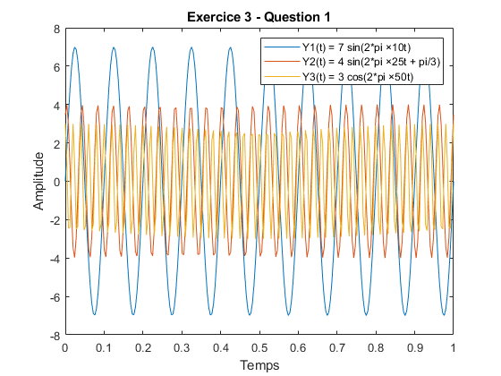 Q2
Déterminez graphiquement la période de chacun de ces signaux. Comparez chaque résultat avec sa valeur théorique.
Y1: période d'environ 0.1s, théoriquement 1/10 = 0.1s, même résultat.
Y2: période d'environ 0.04s, théoriquement 1/25 = 0.04s, même résultat.
Y3: période d'environ 0.02s, théoriquement 1/50 = 0.02s, même résultat.
Q3
Graphiquement, quelle semble être la fréquence du signal Z(t)?
graphiquement, la période semble être 0.2s, donc la fréquence serait de 1/0.2 = 5 Hz.
Déterminez analytiquement cette fréquence sachant que la fréquence d’un signal composite est égal au plus grand dénominateur commun des fréquences des signaux qui le composent.
Analytiquement, le plus grand dénominateur commun entre 10, 25 et 50 (fréquences des signaux) est 5, donc lafréquence du signal résultant est 5 Hz.
figure
plot(t, Y1+Y2+Y3);
title('Exercice 3 - Question 3');
xlabel('Temps');
ylabel('Amplitude');
legend('Y1(t) + Y2(t) + Y3(t)');
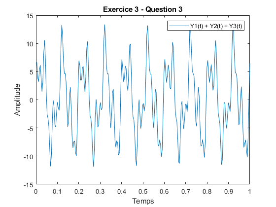 Q4
Que remarquez vous?
on obtient les fréquences des signaux
Y1fft = fft(Y1);
Y2fft = fft(Y2);
Y3fft = fft(Y3);
Yshift1 = fftshift(Y1fft);
fshift1 = (-n1/2:n1/2-1)*(fe/n1); % zero-centered frequency range
doubleshift1 = abs(Yshift1)*2/n1;
Yshift2 = fftshift(Y2fft);
fshift2 = (-n2/2:n2/2-1)*(fe/n2); % zero-centered frequency range
doubleshift2 = abs(Yshift2)*2/n2;
Yshift3 = fftshift(Y3fft);
fshift3 = (-n3/2:n3/2-1)*(fe/n3); % zero-centered frequency range
doubleshift3 = abs(Yshift3)*2/n3;
plot(fshift1, doubleshift1); hold on;
plot(fshift2, doubleshift2); hold on;
plot(fshift3, doubleshift3);
axis([0 length(t)/2 0 inf]);
title('Exercice 3 - Question 4');
xlabel('Fréquence');
ylabel('Amplitude');
legend('Transformée de Fourier de Y1(t) = 7 sin(2*pi ×10t)', 'Transformée de Fourier de Y2(t) = 4 sin(2*pi ×25t + pi/3)', 'Transformée de Fourier de Y3(t) = 3 cos(2*pi ×50t)');
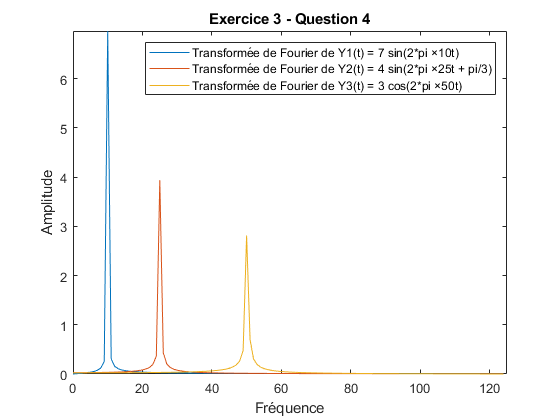 Q5
Que remarquez vous?
on obtient les fréquences des signaux simples composant le signal sommé
figure
Ysum = Y1 + Y2 + Y3;
Ysumfft = fft(Ysum);
Ysumshift = fftshift(Ysumfft);
nsum = length (Ysum);
fshiftsum = (-nsum/2:nsum/2-1)*(fe/nsum);
doubleshiftsum = abs(Ysumshift)*2/nsum;
plot(fshiftsum, doubleshiftsum);
axis([0 length(t)/2 0 inf]);
title('Exercice 3 - Question 5');
xlabel('Fréquence');
ylabel('Amplitude');
legend('Transformée de Fourier de la somme des signaux Y1, Y2 et Y3');
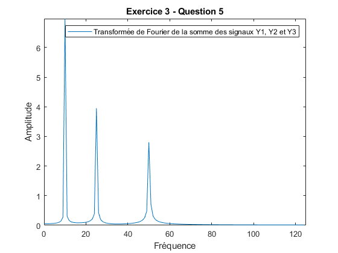 Exercice 4
clear;
Q1
En écoutant le signal, repérez les perturbations de la mélodie principale. Pour chaque perturbation, précisez si le signal est haute ou basse fréquence.
le signal de perturbation est de haute fréquence et il y a possiblement une perturbation à basse fréquence...
[Data, Fe] = audioread("./audio.wav");
player = audioplayer(Data,Fe);
play(player);
Q2
figure;
Datafft = fft(Data);
Datafftshift = fftshift(Datafft);
nData = length(Data);
fshiftData = (-nData/2:nData/2-1)*(Fe/nData);
doubleshiftData = abs(Datafftshift)*2/nData;
plot(fshiftData, doubleshiftData);
title('Exercice 4 - Question 2');
xlabel('Fréquence');
ylabel('Amplitude');
legend('Transformée de Fourier du signal audio.wav');
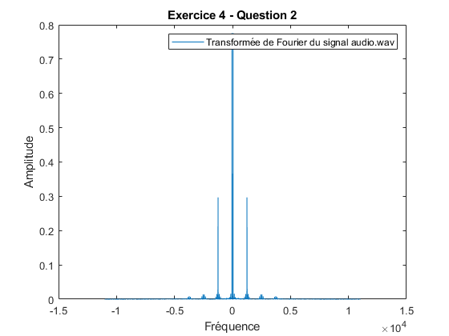 Q3
Quelle est la note (do, ré, mi, fa, sol, la ou si) correspondant à la perturbation à la plus haute fréquence?
C'est un ré# (de 5e gamme)
Q4
Quelle perte d’information observe-t-on sur le signal?
On perd les hautes fréquences venant du signal.
Comment pourrait-on conserver cette information tout en supprimant la perturbation?
Pour conserver cette information, on pourrait utiliser un filtre coupe-bande, qui ne couperait que la fréquence parasite. Par exemple, dans le signal utilisé, on perd le son des cymbales.
nyquist = Fe/2;
cutoff = 1000/nyquist;
b = fir1(128, cutoff, 'low');
filteredData = filter(b,1,Data);
player = audioplayer(filteredData,Fe);
play(player);
Q5
Quelles différences observez-vous entre les différents filtres?
Chebyshev a une courbe de coupure plus accentuée, la coupure est plus raide. Hamming a une courbe un peu moins accentuée et Blackman est encore moins accentuée. Avec blackman, les fréquences basses sont encore présentes, mais sont tout de moins atténuées. De plus, Chebyshev a une ondulation bien plus prononcée après la fin de la coupure que les deux autres méthodes. Ensuite, Hamming est moins prononcée et, finalement, Blackman n'ondule presque pas.
nyquist = Fe/2;
cutoff = 250/nyquist;
order = 128;
ChebyshevWindow = chebwin(order+1,30);
HammingWindow = hamming(order+1);
BlackmanWindow = blackman(order+1);
ChebyshevFilter = fir1(order, cutoff, 'high', ChebyshevWindow);
HammingFilter = fir1(order, cutoff, 'high', HammingWindow);
BlackmanFilter = fir1(order, cutoff, 'high', BlackmanWindow);
Q6
F1 = dfilt.dffir(ChebyshevFilter);
F2 = dfilt.dffir(HammingFilter);
F3 = dfilt.dffir(BlackmanFilter);
freqz([F1 F2 F3]);
legend('Chebyshev', 'Hamming', 'Blackman');
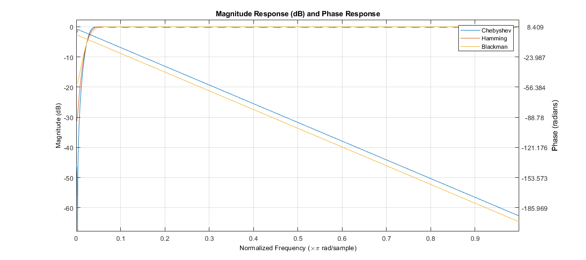 Q7
Lorsque vous écoutez les trois signaux, que remarquez-vous?
Le signal parasite de basse fréquence n'est plus audible.
Pour le filtre passe-haut et en fonction de la fréquence de coupure utilisée, quel va être le compromis sur la qualité du signal restaurée?
Plus la fréquence de coupure sera élevée, plus les signaux parasites de basse fréquences seront atténués, mais les basses fréquences du signal seront eux aussi atténués.
CData = filter(ChebyshevFilter,1,filteredData);
HData = filter(HammingFilter,1,filteredData);
BData = filter(BlackmanFilter,1,filteredData);
Cplayer = audioplayer(CData, Fe);
Hplayer = audioplayer(HData, Fe);
Bplayer = audioplayer(BData, Fe);
play(Bplayer);
Q8
Est-ce que les spectres, au niveau des basses fréquences, correspondent à ce que vous avez entendu et remarqué?
Oui, les signaux parasites de haute fréquence ont été atténués par le filtre passe-bas et les signaux parasites à basse fréquence ont été atténués par le filtre passe-haut utilisé. (Chebyshev, Hamming ou Blackman.) Les fréquences restantes ne définissent pas tout le signal et sont donc beaucoup plus bas dans le domaine fréquentiel.
figure;
CDatafft = fft(CData);
CDatafftshift = fftshift(CData);
doubleshiftCData = abs(CDatafftshift)*2/nData;
plot(fshiftData, doubleshiftCData);
title('Exercice 4 - Question 8: Chebyshev');
xlabel('Fréquence');
ylabel('Amplitude');
ylim([0 1]);
legend('Transformée de Fourier du signal audio.wav filtré avec passe-haut Chebyshev');
figure;
HDatafft = fft(HData);
HDatafftshift = fftshift(HData);
doubleshiftHData = abs(HDatafftshift)*2/nData;
plot(fshiftData, doubleshiftHData);
title('Exercice 4 - Question 8: Hamming');
xlabel('Fréquence');
ylabel('Amplitude');
ylim([0 1]);
legend('Transformée de Fourier du signal audio.wav filtré avec passe-haut Hamming');
figure;
BDatafft = fft(BData);
BDatafftshift = fftshift(BData);
doubleshiftBData = abs(BDatafftshift)*2/nData;
plot(fshiftData, doubleshiftBData);
title('Exercice 4 - Question 8: Blackman');
xlabel('Fréquence');
ylabel('Amplitude');
ylim([0 1]);
legend('Transformée de Fourier du signal audio.wav filtré avec passe-haut Blackman');
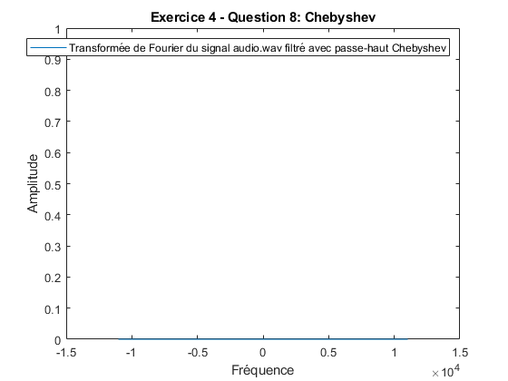 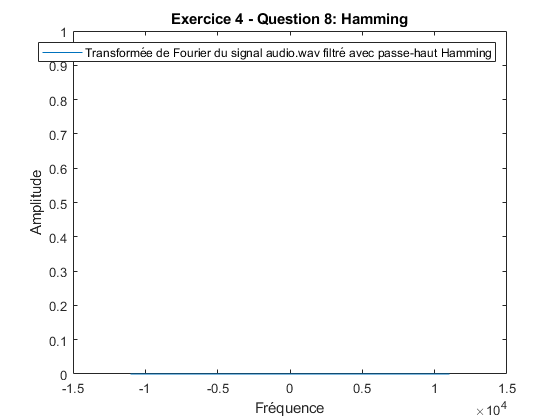 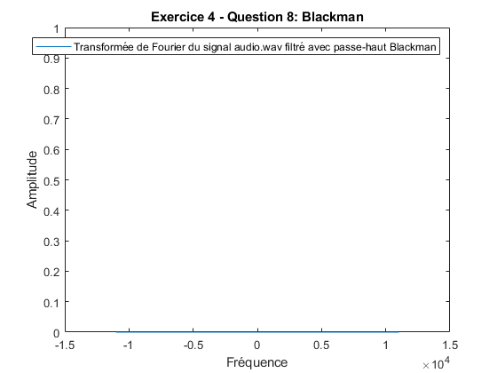